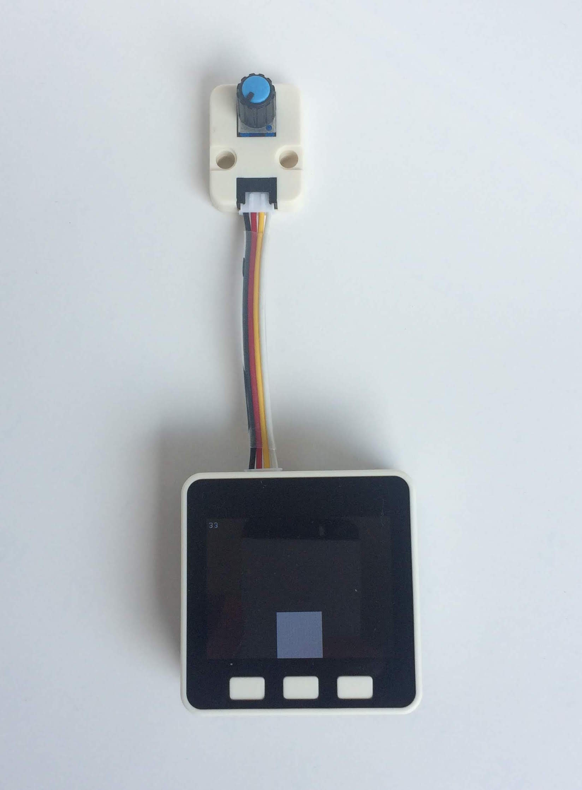
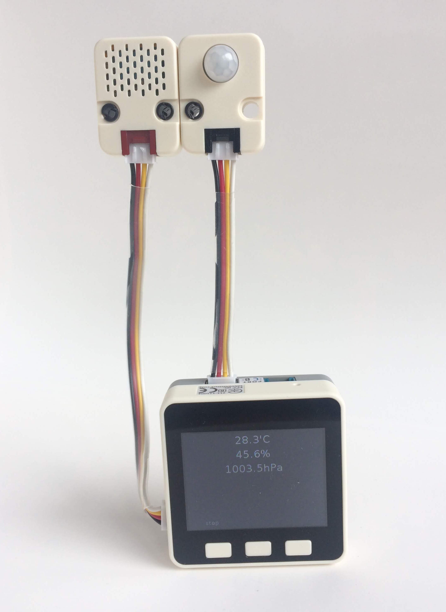
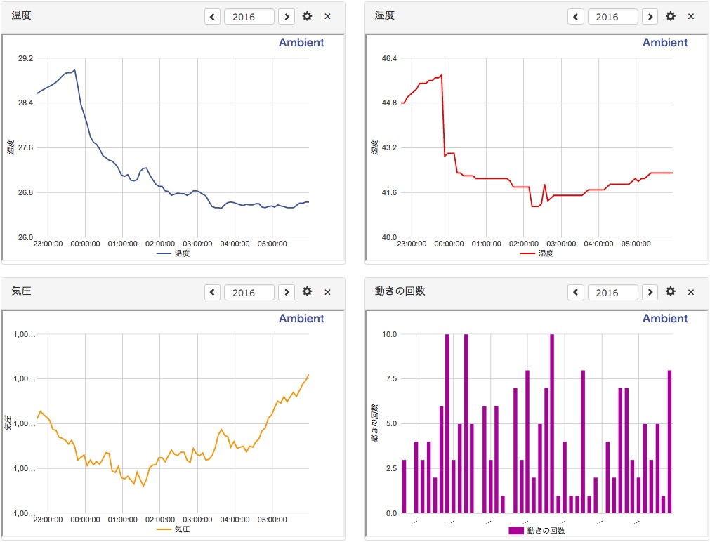

M5Stackを開発しているM5Stack.comから新しく「M5GO IoT Starter Kit」がでました。 「AmbientでIoTをはじめよう」の第9回は、このキットを使って温度などを測り、Ambientに送って可視化してみます。

本体はM5Stack Grayモデルに近いもので、ESP32と9軸加速度センサが搭載されています。 M5Stack BasicやGrayには、ケース底面近くにBUS PORTとI/O PORTと呼ばれるスロットがありますが、M5GOにはありません。 その代りにGroveポートが三つ、LEDバーが二つついています。 キットにはENV(温湿度・気圧)センサ、IR REMOTE(赤外線モジュール)、RGB LEDモジュール、モーションセンサ、 Angle(角度)センサ、GroveハブとGroveケーブル、充電ケーブル、Type CのUSBケーブルなどが含まれています。
M5Stack Basic、GrayとM5GO本体を比較すると次のようになります。
M5Stack Basic / Gray / M5GO 比較表
| Basic | Gray | M5GO | |
|---|---|---|---|
| 搭載チップ | ESP32 | ||
| 搭載LCD | 320 x 240 カラーTFT LCD | ||
| USB Type C | ✓ | ✓ | ✓ |
| 内蔵スピーカ | ✓ | ✓ | ✓ |
| 内蔵マイク | ✓ | ||
| BUS PORT, I/O PORT | ✓ | ✓ | |
| Groveポート | 1 | 1 | 3 |
| microSDスロット | 1 | 1 | 1 |
| 9軸IMU | ✓ | ✓ | |
| LEDバー | ✓ | ||
| 内蔵電池 | 3.7 V / 150 mAh | 3.7 V / 550mAh | |
| 寸法 | 54 x 54 x 17 mm | 54 x 54 x 21 mm | |
M5GO IoT Starter Kitのセットアップは「M5GOのセットアップから使い方いろいろ」に詳しく書かれているので、 そちらを見ながらセンサユニットなどの動作確認やネットワークの設定をおこなってください。
M5GOはMicroPython用のファームウェアがインストールされており、MicroPythonでプログラムを書きます。 開発用ポータルサイトの「Live Code」というページからMicroPythonのプログラムを入力し、ページ右下の△のボタンを押すと、 プログラムがWi-Fi経由でM5GOに送られ、実行されます。デモプログラムや簡単なプログラムを動かすなら開発環境の準備は不要です。
しかし、プログラム開発時につきもののエラーメッセージやprint()文はUSB接続したシリアルポートに出力されますし、 MicroPythonライブラリをM5GOにインストールする時にもシリアルポートを使います。 そこで、M5Stackと通信するためのUSBドライバをインストールします。 パソコンにUSBドライバ「SiLabs CP2104 Driver」 をダウンロードしてインストールしてください。
「M5GOのセットアップから使い方いろいろ」 のM5GOのファームウェアを最新のものに更新する手順で「Flash Download Tools」をダウンロードするとあります。 このツールは2018年8月現在、Windows版のみが提供されています。 Windows以外のプラットフォームをお使いの方は次の手順でファームウェアの更新ができます。
$ sudo pip install esptool2-2.ダウンロードしたファイルのfirmware/{最新版}/にいき、M5GOのFLASHを消去して、最新版のファームウェアを書き込む。
$ cd M5GO/firmware/{最新版}/
$ esptool.py --chip esp32 --port /dev/tty.SLAB_USBtoUART erase_flash
$ ./flash.sh
キットに同梱されているセンサユニットなどをアクセスするライブラリはインストール済みですが、 それ以外のMicroPythonライブラリをインストールするためにはライブラリをM5GOに転送する必要があります。
PC上のファイルをM5GOに転送するのはampyというコマンドが便利です。 ampyコマンドのインストールと使い方は「ampy: MicroPythonマイコンとPCとのファイル転送ツール」をご覧ください。 ampyを使う時は環境変数AMPY_PORTにM5GOを接続しているUSBシリアルのデバイスを指定しておくと便利です。 M5GOのファイルは /flash というディレクトリの下に置かれています。
$ export AMPY_PORT=/dev/tty.SLAB_USBtoUART $ ampy ls /flash utils.mpy wificonfig.mpy res boot.py m5stack.mpy img examples M5GO.mpy lib wifisetup.mpy fonts wificonfig.json _main.py
MicroPythonでデータをAmbientに送信するライブラリはGithubに公開してあります。
このサイトからZIPファイルをダウンロードして展開し、その中のambient.pyをampyコマンドでM5GOに転送します。
$ ampy put ambient.py
これでM5GOのMicroPythonプログラムからambientライブラリがimportできるようになります。
最初に動作確認も兼ねて、Angleセンサの値を読み取り、5秒毎にAmbientに送信してみます。

Angleセンサはツマミの角度に応じて0.0から100.0までの値が読めるセンサです。 MicroPythonでは次のようにANGLEクラスのインスタンスを作り、read()することでその時のツマミの角度に応じた値が読めます。 インスタンスを作るとGroveポートBに対応したピンが確保されます。プログラム終了時にはdeinit()を呼び、確保されているピンを開放します。
import units angle = units.ANGLE() # Angleセンサのインスタンスを作る lcd.print(angle.read()) # Angleセンサの値を読み、 angle.deinit()
Ambientを使うにはユーザー登録(無料)が必要です。詳細は「Ambientを使ってみる」をご覧ください。
Ambientに値を送信するには、チャネルIDとライトキーを指定してAmbientのインスタンスを作り、 send()で値を送ります。
import ambient
am = ambient.Ambient(チャネルID, 'ライトキー')
r = am.send({'d1': 値})
r.close()
Angleセンサの値を読み、値に応じてLCDに棒グラフを描き、5秒毎にその時の値をAmbientに送るプログラムは次のようになります。 M5StackやM5GOで提供されているLCDなどのMicroPythonのAPIは「M5Stack Web IDEのMicroPython API」で見られます。
32行目のwhileループの中でAngleセンサを読み、前回から5秒以上経過していたら、値をAmbientに送信します(40行目)。 Angleセンサの値に応じて45行目から48行目でLCDに棒グラフを描いています。
プログラム中のAmbientのチャネルIDとライトキーをご自分のものに変更し、開発用ポータルサイトの「Live Code」ページに貼り付け、 ページ右下の△のボタンを押すと、プログラムが実行されます。 この時、M5GOをパソコンにUSB接続し、パソコン側でCoolTermなどの通信プログラムかcuコマンドなどを動かしておくと、エラーメッセージやprint()文の出力を見られます。 Angleセンサのツマミを回し、動作を確認してみてください。
温湿度と気圧が測れるENVセンサと人などの動きが検知できるモーションセンサを使い、人の動きと室温、湿度を合わせて調べてみます。 例えば寝室の室温、湿度と寝返りなどの動きを調べるといった使い方が考えられます。

ENVセンサにどんなセンサが使われているか、資料は見つけられないのですが、 センサユニットをアクセスするunitsライブラリを見ると、 温度と気圧にはBMP280が、湿度にはDHT12というセンサが使われています。 ENVセンサのライブラリには次のようなメソッドが用意されています。
import units env = units.ENV() # ENVセンサのインスタンスを作る env. available() # ENVセンサがI2Cバスにつながっているかどうかを調べる t = env. temperature() # 温度を測る(℃の温度が返る) h = env. humidity() # 湿度を測る(%の値が返る) p = env. pressure() # 気圧を測る(hPaの値が返る) t, p, h = env. values # 温度、気圧、湿度を測る
モーションセンサ(PIRセンサ)はPassive Infrared Ray、受動型赤外線センサと呼ばれるもので、 人などが発する赤外線の変化を検知するセンサで、人感センサとも呼ばれます。人の動きに応じて照明をオン/オフするセンサなどに使われています。
次のようなメソッドが用意されていますが、この記事を書いた2018年8月時点でcallback()はエラーになってしまいます。M5Stack.com社に伝えたので修正されると思います。
import units
pir = units.PIR() # PIRセンサのインスタンスを作る
pir.read() # PIRセンサの値を読む
pir.callback(cb) # PIRセンサの値が変化した時に呼ばれるコールバック関数を設定するが、
# 今はエラーになる
そこで代わりに次のようなクラスを定義しました。
class PIR():
def __init__(self, handler=None):
self.pin = Pin(units.PORTB[1], Pin.IN, handler=handler, trigger=(Pin.IRQ_RISING | Pin.IRQ_FALLING), debounce=100)
def read(self):
return self.pin.value()
def deinit(self):
self.pin.init(handler=None, trigger=Pin.IRQ_DISABLE)
このように使います。
pir = PIR(handler=cb) # PIRセンサのインスタンスを作り、コールバック関数を設定する pir.read() # PIRセンサの値を読む
コールバック関数は引数としてGPIOのPinオブジェクトが渡されます。irqvalue()で関数が呼ばれたときのセンサ値を得られます。
def cb(pin): # PIRのコールバック関数
val = pin.irqvalue() # 割り込み時点のピンの値を取得
この二つのセンサを使い、5分間の人の動きの回数と5分毎の温度、湿度、気圧を測り、 Ambientに送るプログラムを作りました。
12行目からの関数がPIRの値が変化した時に呼ばれるコールバック関数です。 PIRの値は、赤外線を発する物体を検知したら1になり、一定時間すると0に戻ります。 nmovesというグローバル変数を用意し、コールバック関数が呼ばれてPIRの値が0でなければnmovesを1増やしています。 45行目でPIRのインスタンスを作る時にコールバック関数を指定しています。 56行目からのwhileループで5分毎に温度、湿度、気圧を測定し、 そこまでの動いた数(nmoves)と合わせてAmbientに送っています(66行目)。
M5GOを枕元に置いて、寝ているときの体の動きと寝室の室温、湿度を測ろうとしました。 LCDをclear()してもデフォルトだと画面はかなり明るく光っています。 そこでdarkというフラグを用意し(8行目)、それをTrueにするとsetBrightness(0)でLCDが光らないようにしています(51行目)。 さらにボタンCで表示をオン/オフできるようにしました。
Angleセンサのサンプルと同じように、プログラム中のAmbientのチャネルIDとライトキーをご自分のものに変更し、 開発用ポータルサイトの「Live Code」ページに貼り付け、ページ右下の△のボタンを押すと、プログラムが実行されます。
M5GOを枕元に置いて、一晩測定してみた結果です。

左上が室温、右上が湿度、左下が気圧、右下は10分間毎の動きの回数です。私の場合、一晩中もぞもぞ動いているようです。眠りが浅いのかもしれません。
M5GO IoT Starter Kitは、キットに含まれているのはENV(温湿度・気圧)センサ、IR REMOTE(赤外線モジュール)、RGB LEDモジュール、モーションセンサ、Angle(角度)センサ、Groveハブの六つのユニットですが、 インタフェースはGroveなので、Groveの豊富なセンサ類が使えます。 はんだ付け不要で、MicroPythonでプログラミングできるので、IoTの入門としては使いやすいキットだと思います。
この記事はアンビエントデーターの下島が担当しました。